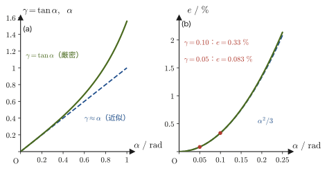

第18章材料力学の基礎 — 荷重・応力・ひずみ
この章でできるようになること．棒やボルトに力を加えたとき，材料の内部にどれだけの「力の密度」（応力）が生じ，どれだけ形が変わるか（ひずみ）を，単位まで含めて数値で見積もれるようになる．鋼棒・コンクリート柱・セラミックス部品などの例題で，$\mathrm{MPa}$ という単位の数値を実際に計算する．
なぜ必要か．ここまでの第I部・第II部では，物体を「大きさの無視できる点（質点）」か，「形の変わらない硬い塊（剛体）」として扱ってきた．しかし，現実の橋の鉄骨も，ビルの柱も，スマートフォンの中のセラミックスの部品も，力を受ければわずかに変形する．その「わずかな変形」を無視せずに，どれだけの力までなら安全に使えるのか，どこまで変形すると壊れるのかを考える学問が材料力学（mechanics of materials）である．新しい材料を創り出しても，それがどれだけの力に耐えられるかを定量的に評価できなければ，実際の部品や構造物には使えない．
高校物理との接点．高校物理でも，圧力 $p=F/A$（力を面積で割った量）や，フックの法則 $F=-kx$（ばねの復元力は伸びに比例する）は学んだはずである．材料力学は，この2つのアイデア——「力を面積で割る」と「変形は力に比例する」——を，ばねという特別な部品だけでなく，金属やセラミックス，コンクリートなど，あらゆる固体の変形一般に押し広げたものだと考えるとよい．本章では，「力を面積で割る」（応力）と，変形を「元の長さで割る」（ひずみ）を定義し，両者が「比例する」ことは次章で扱う．
- 第18章（本章） 材料力学の基礎——材料力学を考えるための基礎仮定，荷重の分類，応力（垂直応力とせん断応力）とひずみの定義，ポアソン比．
- 第19章 フックの法則・弾性係数と材料試験——応力とひずみを結びつける縦弾性係数 $E$・横弾性係数 $G$・体積弾性係数 $K$，応力–ひずみ線図．
- 第20章 多軸応力・はりの曲げ・ねじり——1方向だけでなく複数方向から力を受ける場合，はりの曲げ応力，軸のねじり応力．
- 第21章 破壊力学の基礎——き裂があるとなぜ弱くなるのか，グリフィスの理論，破壊靱性．
- 第22章 疲労・強度のばらつき・環境による破壊——繰返し荷重による疲労破壊，セラミックスの強度のばらつき（ワイブル統計），環境が絡む破壊．
- 材料力学が固体をどのようにモデル化するか——7つの基礎仮定（均質体・等方体・内力・弾性と塑性・微小変形・重ね合わせの原理・サン＝ブナンの原理）
- 荷重（外力）の3通りの分類——作用のしかた（引張・圧縮・せん断・ねじり・曲げ），分布のしかた（集中・分布），時間変化のしかた（静・動）
- 垂直応力 $\sigma=P/A$ とせん断応力 $\tau=Q/A$ の定義，内力を求める切断法，符号の約束（引張を正，圧縮を負とする），単位 $\mathrm{Pa}=\mathrm{N/m^2}$ と現場でよく使う $\mathrm{MPa}=\mathrm{N/mm^2}$，$\mathrm{GPa}$ の関係
- 縦ひずみ $\varepsilon=\Delta l/l_0$・横ひずみ $\varepsilon'$ の定義，ポアソン比 $\nu=\abs{\varepsilon'/\varepsilon}$ とポアソン数 $m=1/\nu$
- せん断ひずみ $\gamma=\tan\alpha$ と体積ひずみ $\varepsilon_V=\Delta V/V$ の定義，微小変形の1次近似の考え方，一軸引張での $\varepsilon_V\approx\varepsilon(1-2\nu)$
もとにしたノート：望月泰英『物理学ノート 材料力学』 pp. 1–4．
18.1 材料力学の基礎仮定と内力
実際の金属やセラミックスは，原子や結晶粒からできた，きわめて複雑な内部構造をもっている．拡大して見れば，結晶粒の境目（粒界）や，ごくわずかな空孔・不純物が至るところにあり，結晶の向きによって硬さや伸びやすさが変わることも珍しくない．しかし，そうした複雑さをすべて数式に取り込もうとすると，実用的な計算はほとんど不可能になってしまう．そこで材料力学では，第1章で「質点」，第10章で「剛体」というモデルを導入したのと同じ発想で，現実の材料を扱いやすいモデルに単純化する．以下の(i)〜(vii)が，材料力学の議論全体を支える基礎仮定である．各ボックスの題名に(i)〜(vii)の番号を付け，最後に表18.1でまとめる．
定義18.1 均質体（homogeneous body）— 基礎仮定 (i)
材料は連続した固体であり，内部に欠陥や空洞がなく，すべての部分が同じ性質をもつと仮定する．このような材料を均質体（homogeneous body）という．実際の材料は結晶粒などの微細構造をもつが，部材の寸法がその微細構造の大きさより十分大きいときには，材料を切れ目なくつまった連続体（continuum）とみなして，どの部分も同じ性質をもつと近似してよい．
定義18.2 等方体（isotropic body）— 基礎仮定 (ii)
材料の力学的性質（伸びやすさや強さなど）が，見る方向によって変化しないと仮定する．このような材料を等方体（isotropic body）という．均一で，ひずみなどの力学的性質が方向によらないという性質である．
注意：異方性材料（anisotropic materials）もある（基礎仮定 (ii) の但し書き）
場合によっては，力学的性質が方向によって異なる異方性材料（anisotropic materials）を扱うこともある．たとえば，木材は繊維方向とそれに垂直な方向とで強さが大きく異なり，炭素繊維強化プラスチック（CFRP）のような繊維強化複合材料も，繊維の向きに応じて性質が変わるように設計されている．また，金属も1つの結晶粒（単結晶）だけを取り出せば方向によって性質が異なる（異方性）が，多数の結晶粒がランダムな向きを向いて集まった多結晶体全体としてならせば，平均としてはほぼ等方的にふるまう．本書では，特に断らない限り，材料は定義18.1・定義18.2の均質・等方な弾性体であるとして議論を進める．
定義18.3 内力（internal force）— 基礎仮定 (iii)
材料に外力（external force）が作用すると，材料内部にはその外力に抵抗しようとする力が生じる．これを内力（internal force）という．内力の大きさを実際に求める方法（切断法）は18.3節で述べる．
イメージ：内力とニュートンの第3法則
内力は，突然どこからか湧いて出るような特別な力ではない．材料を，仮想的にたくさんの微小な部分（原子・分子の集まり）に分けて考えると，隣り合う部分どうしは互いに引っぱり合ったり押し合ったりする力を及ぼし合っている．外力が加わっていないときは，これらの力はちょうど釣り合っていて，材料は変形しない．外力が加わると，この隣り合う部分どうしの力のバランスが崩れ，新たな釣り合いに落ち着くまで材料は変形しながら，隣接する部分に力を及ぼし合う——これが内力の正体である．ある断面を考えたとき，その断面を境に材料の片側が反対側に及ぼす力と，反対側が片側に及ぼす力は，作用・反作用の法則（第2章 2.3節）により大きさが等しく向きが逆になる．次の18.3節で定義する「応力」は，この内力を断面の面積で割って，力の「密度」として表したものである．
材料に外力が生じると内力が発生するという性質と対をなすのが，変形そのものの性質である．外力を受けた材料がどのように変形から回復する（あるいは回復しない）かによって，次のように分類する．
定義18.4 弾性（elasticity）と塑性（plasticity）— 基礎仮定 (iv)
外力を取り去ると，変形がなくなって元の形に戻る性質を弾性（elasticity）という．本書ではとくに，外力による変形が外力の大きさに比例する（線形な）弾性を扱う．この逆に，外力を取り去っても変形が残ってしまう性質を塑性（plasticity）という．
イメージ：弾性と塑性の高校物理での例
弾性の身近な例は，高校物理で学んだつるまきばねである．ばねを少し引っぱって手を放せば，ばねは元の長さに戻る——これが弾性である．一方，針金を大きく曲げると，手を放しても曲がったままで元に戻らない．これが塑性変形である．一般に，どんな材料も，外力（したがって変形）が小さいうちは弾性的にふるまい，外力がある限界（弾性限度）を超えると塑性変形が残るようになる．本章と次章（第19章）では，主に弾性の範囲だけを扱う．塑性変形や，弾性から塑性への移り変わりの詳細は，第19章の応力–ひずみ線図で扱う．なお，「元に戻る」ことと「変形が力に比例する」ことは別々の性質である．ゴムは大きく伸ばしても手を放せば元に戻る（弾性）が，伸びは力に比例しない（非線形弾性）．基礎仮定 (iv) が要求するのは，元に戻り，しかも比例する線形弾性であり，これは変形が小さいときに多くの材料で成り立つ．
注意：微小変形の仮定 — 基礎仮定 (v)
材料力学では，外力による材料の変形はきわめて小さく，変形によって外力の作用のしかた（力が加わる位置や向き）そのものは変わらないと仮定する．たとえば，棒を引っぱって少し伸びても，力を加える向きや，力を受ける断面積が計算上無視できるほどしか変化しない，という意味である．この仮定のおかげで，力と変形の関係を線形（比例関係）として扱うことができ，次に述べる重ね合わせの原理も成り立つ．変形が実際に大きくなる場合（ゴムを大きく伸ばす場合など）は，この仮定が破れ，より高度な理論（有限変形理論）が必要になる．
法則18.1 重ね合わせの原理（principle of superposition）— 基礎仮定 (vi)
材料に多くの外力が同時に作用するとき，それらを全部足し合わせた力（合力）が作用したものとして扱ってよい．また，このとき材料に生じる変形や内部の力の状態は，それぞれの外力を別々に加えたときの状態を足し合わせたものに一致する．これを重ね合わせの原理（principle of superposition）という．
なぜ重ね合わせが成り立つのか
重ね合わせの原理は，力と変形の関係が線形（比例関係）であることの直接の結果である．力 $P_1$ が変形 $x_1$ を，力 $P_2$ が変形 $x_2$ を引き起こすとき，力の関係が比例（$x\propto P$）であれば，$P_1+P_2$ という力は $x_1+x_2$ という変形を引き起こす——これはちょうど，高校物理で学んだ「2つの波が同時に存在するとき，全体の変位はそれぞれの波の変位の和になる」という波の重ね合わせ（第17章）と同じ数学的な構造である．前述の微小変形の仮定（力と変形がほぼ比例する）が成り立つ範囲でだけ，重ね合わせの原理は正しい．変形が大きくなって比例関係から外れると，重ね合わせは使えなくなる．
例題18.1 重ね合わせの原理で応力を求める
断面積 $A=200\ \mathrm{mm^2}$ の鋼の棒の端面に，同じ向き（軸方向の引張）に $P_1=10\ \mathrm{kN}$ と $P_2=15\ \mathrm{kN}$ の2つの荷重が同時に作用している．(a) 合力を1つの荷重として扱ったときの応力 $\sigma$ と，(b) 各荷重を別々に加えたときの応力 $\sigma_1,\sigma_2$ の和が一致することを確かめよ．ただし，応力は荷重を断面積で割った量 $\sigma=P/A$ である（18.3節で正式に定義する．単位 $\mathrm{N/mm^2}$ は $\mathrm{MPa}$ に等しい）．
解答 (a) 合力は $P=P_1+P_2=10\ \mathrm{kN}+15\ \mathrm{kN}=25\ \mathrm{kN}=2.5\times10^{4}\ \mathrm N$ である．したがって
$$ \sigma=\frac{P}{A}=\frac{2.5\times10^{4}\ \mathrm N}{200\ \mathrm{mm^2}}=125\ \mathrm{N/mm^2}=125\ \mathrm{MPa} $$(b) 別々に加えたときの応力は，
$$ \sigma_1=\frac{10\times10^{3}\ \mathrm N}{200\ \mathrm{mm^2}}=50\ \mathrm{MPa},\qquad \sigma_2=\frac{15\times10^{3}\ \mathrm N}{200\ \mathrm{mm^2}}=75\ \mathrm{MPa} $$であり，$\sigma_1+\sigma_2=50\ \mathrm{MPa}+75\ \mathrm{MPa}=125\ \mathrm{MPa}$ は (a) の $\sigma$ と一致する．$P_1$ と $P_2$ を足してから $A$ で割っても，別々に $A$ で割ってから足しても同じになるのは，$\sigma=P/A$ が $P$ に比例する（線形である）ためであり，これが重ね合わせの原理が成り立つ理由そのものである．なお $P_2$ が逆向き（圧縮，$-15\ \mathrm{kN}$）の場合も，合力は $10-15=-5\ \mathrm{kN}$ で $\sigma=-5000\ \mathrm N/200\ \mathrm{mm^2}=-25\ \mathrm{MPa}$，$\sigma_1+\sigma_2=50-75=-25\ \mathrm{MPa}$ となり，やはり一致する．
最後に，材料力学で外力の「作用のしかたの細部」をどこまで気にする必要があるかを述べる基礎仮定が，次のサン＝ブナンの原理である．
法則18.2 サン＝ブナンの原理（Saint-Venant's principle）— 基礎仮定 (vii)
材料に作用する外力を，それと合力も合モーメントも等しい別の作用のさせ方（たとえば，1点に集中して加える代わりに，広い範囲に分布させて加える）に置き換えても，外力から十分離れた場所での変形および応力の状態はほとんど変わらない．ここで合力は外力のベクトルとしての和，合モーメントは各外力の力のモーメント（力×腕の長さ，第2章 2.5節）の和である．「十分離れた」の目安は，外力が作用している範囲の代表的な大きさ（部材の幅や直径など）程度以上の距離である．これをサン＝ブナンの原理（Saint-Venant's principle）という．外力の作用点に近づくと，応力分布は一様でなくなるが，材料力学ではどの断面においても応力分布は一様であるとして扱う．
例題18.2 円孔のある板とサン＝ブナンの原理
一様な厚さの板の中央に直径 $d$ の小さな円孔をあけ，板の両端を左右から一様な引張応力 $\sigma_0$ で引っぱる引張試験を行う．円孔のごく近くでは応力が周囲より大きくなる（これを応力集中といい，第21章で定量的に扱う）ことが知られている．サン＝ブナンの原理を用いて，この応力の乱れが孔のまわりのどの範囲に及ぶかを説明せよ．また，孔が板の幅に比べて十分小さいとき，孔の中心を通り荷重に垂直な直線上の応力は，孔の中心からの距離 $r$ の点で $\sigma=\sigma_0\bigl\{1+a^2/(2r^2)+3a^4/(2r^4)\bigr\}$（$a=d/2$ は孔の半径）となることが，弾性論の厳密解（キルシュの解）から知られている．この式を使って，$r=d,\ 2d,\ 3d$ での応力 $\sigma$ が $\sigma_0$ の何倍かを求めよ．
解答 孔をあけることは，孔のない板から孔の部分を取り去ることであり，孔の縁は外力のはたらかない自由な表面になる．これは，孔のない板の内部で孔の縁にあたる面にはたらいていた力を，ちょうど打ち消す力を縁に加えたものと同じである．この打ち消す力は，全体として合力も合モーメントもゼロの，互いにつり合った力の集まりである．したがってサン＝ブナンの原理より，その影響は，力が作用している範囲の大きさ，すなわち孔の直径 $d$ 程度の距離だけ離れれば急速に消え，遠方の応力は孔がない場合の一様な値 $\sigma_0$ に戻る．
次に数値を求める．$a=d/2$ より，$r=d$ は $r=2a$，$r=2d$ は $r=4a$，$r=3d$ は $r=6a$ に当たるので，
\begin{align} r=d\ (=2a):&\quad \frac{\sigma}{\sigma_0}=1+\frac{1}{2\cdot2^{2}}+\frac{3}{2\cdot2^{4}}=1+\frac18+\frac3{32}=\frac{39}{32}\approx1.22 \notag\\ r=2d\ (=4a):&\quad \frac{\sigma}{\sigma_0}=1+\frac{1}{2\cdot4^{2}}+\frac{3}{2\cdot4^{4}}=1+\frac1{32}+\frac3{512}=\frac{531}{512}\approx1.037 \notag\\ r=3d\ (=6a):&\quad \frac{\sigma}{\sigma_0}=1+\frac{1}{2\cdot6^{2}}+\frac{3}{2\cdot6^{4}}=1+\frac1{72}+\frac3{2592}=\frac{2631}{2592}\approx1.015 \notag \end{align}である．孔の縁（$r=a$）では $1+\frac12+\frac32=3$ 倍にもなる（応力集中係数 $3$）が，孔の中心から $d$ 離れた点（縁から $d/2$）で約22 %，$2d$ で約4 %，$3d$ で約1.5 % 高いだけになる．したがって，孔の中心から直径の2〜3倍以上離れた場所では，応力はほぼ孔のない場合の一様な値 $\sigma_0$ に戻ったとみなしてよい（この数値は孔が板の幅に比べて十分小さいときの目安である）．逆に言えば，孔のごく近く（中心から直径程度以内）だけが特別に応力の高い危険な領域であり，そこだけを詳しく調べればよい——これが，構造物の強度評価で「応力集中箇所」だけを重点的にチェックすればよい理由でもある（具体的な応力集中係数の値は第21章で学ぶ）．
| 番号 | 仮定 | 一言でいうと | 成り立たなくなる例 |
| (i) | 均質体（定義18.1） | どの部分も同じ性質 | 気孔の多い発泡金属，粗い粒子を含む複合材料 |
| (ii) | 等方体（定義18.2） | 性質が方向によらない | 木材，CFRP，単結晶 |
| (iii) | 内力（定義18.3） | 外力に抵抗して内部に生じる力 | （近似ではなく，外力を受ければ必ず生じる量） |
| (iv) | 弾性（定義18.4） | 除荷すると元に戻り，変形は力に比例する | 降伏後の金属（塑性），ゴム（非線形弾性） |
| (v) | 微小変形 | 変形は極めて小さく，外力の作用状態は変わらない | ゴムの大変形，細長い柱が突然たわむ座屈 |
| (vi) | 重ね合わせの原理（法則18.1） | 外力の効果は足し合わせられる | 大変形・塑性変形（比例関係が破れるとき） |
| (vii) | サン＝ブナンの原理（法則18.2） | 作用のさせ方の細部は遠方では効かない | 荷重点や孔・切欠きのすぐ近く |
18.2 荷重の分類
前節で見た「外力」は，工学の現場では荷重（load）と呼ばれることが多い．物理でいう「力」と中身は同じだが，材料力学ではこの荷重を，作用のしかた・分布のしかた・時間変化のしかたという3つの観点で分類することが習慣になっている——分類ごとに，材料の壊れ方や設計上の注意点が異なるためである．
定義18.5 荷重（load）
工学的には，物体に作用する外力のことを荷重（load）という．単位は力の単位と同じ $\mathrm N$（ニュートン）である．荷重は，その作用のしかたによって以下のように分類される．
18.2.1 作用による分類
荷重が材料をどのように変形させようとするかによって，次の5種類に分類する．
- (i) 引張荷重（tensile load） 材料を荷重方向に伸ばすように作用する力．
- (ii) 圧縮荷重（compressive load） 材料を荷重方向に縮めるように作用する力．
- (iii) せん断荷重（剪断荷重，shearing load） 材料の断面に沿ってずらすように作用する力．たとえば，リベットで留めた2枚の板を反対向きに引くと，リベットは断面に沿ってずらされる（図18.5）．
- (iv) ねじり荷重（torsional load） 棒の断面を軸のまわりにねじるように作用する荷重．ねじりによる応力は第20章（20.7節）で扱う．
- (v) 曲げ荷重（bending load） 支持された棒を曲げるように作用する荷重．曲げによる応力は第20章（20.5節）で扱う．
予告：ねじり・曲げは第20章で
ねじり荷重・曲げ荷重を受ける棒の内部にどのような応力が生じるか（ねじり応力，曲げ応力）は，第20章 20.7節（ねじり）と20.5節（曲げ）で学ぶ．本章では，荷重の種類の名前と，それぞれの力のはたらき方の図を知っておけば十分である．
18.2.2 分布様式による分類
- (i) 集中荷重（concentrated load） 1点に集中して作用する荷重．図18.4〜図18.7の $P$，$Q$ は，いずれも1点（または1つの断面）に集中して作用する集中荷重として描かれている．
- (ii) 分布荷重（distributed load） ある領域に分布して作用する荷重．荷重分布が一様なとき，等分布荷重（uniformly distributed load）という．たとえば，積雪が屋根に及ぼす荷重や，水が壁に及ぼす水圧のように，面全体に広がって作用する荷重が分布荷重の例である．はり（梁）の全長にわたる等分布荷重は，単位長さあたりの荷重 $w\ [\mathrm{N/m}]$ で表し，長さ $L$ の梁にかかる荷重の合計（合力）は $wL$ で，梁の中央に作用するものと置き換えられる（図18.8，例題18.4）．
18.2.3 荷重速度による分類
- (i) 静荷重（static load） 大きさが一定，あるいは極めて静かに変化する荷重．
- (ii) 動荷重（dynamic load） 時間とともに変化する荷重．荷重が急激に作用する衝撃荷重（impact load）や，荷重が周期的に変化して作用する繰返し荷重（repeated load）がある．
なぜ荷重の種類を区別するのか
同じ材料でも，どの種類の荷重を受けるかによって，注目すべき壊れ方が違ってくる．静荷重に対してはある荷重までなら安全に耐えられる材料でも，衝撃荷重を受けると同じ大きさの荷重でも壊れてしまうことがある（衝撃に弱い材料の代表がセラミックスである）．また，繰返し荷重は，1回あたりの荷重が小さくても，繰り返すうちに材料が徐々に傷んでいく「疲労」という現象を引き起こす（第22章で詳しく扱う）．したがって，材料力学や強度設計では，まずどの種類の荷重が問題になっているのかを正しく見極めることが，最初の重要なステップになる．
例題18.3 身近な物体を5種類の荷重に分類する
次の(a)〜(e)の状況で，材料に作用している荷重を，作用による5つの分類（引張・圧縮・せん断・ねじり・曲げ）のどれにあてはまるか答えよ．
(a) 吊り橋のケーブルが橋げたを支えている．
(b) ビルの1階の柱が上の階の重さを支えている．
(c) ドライバーでねじを締める．
(d) ボルトで留めた2枚の板を，互いに反対向きに引く．
(e) しなる釣り竿の先端に魚がかかり，竿が大きくたわむ．
解答 (a) ケーブルは，橋げたの重さによって長さ方向に引っぱられている．引張荷重である．
(b) 柱は，上の階の重さによって長さ方向に押しつぶされる向きに力を受けている．圧縮荷重である．
(c) ドライバーは，ねじの軸のまわりに回転させる力（偶力）を加えている．図18.6と同じ状況であり，ねじり荷重である．
(d) ボルトは，2枚の板から，断面（板と板の境目の面）に平行で互いに反対向きの力を受け，その面に沿ってずらされる．図18.5と同じ状況であり，せん断荷重である（はさみで紙を切るときも，2枚の刃が紙に反対向きの力を及ぼしてずらすので，せん断荷重がはたらく）．
(e) 釣り竿は，一端（手で持つ側）で支えられ，先端に魚の重さによる荷重を受けて全体が弓なりに曲がる．図18.7とは支え方（一端を固定し他端は自由）が違うが，棒に垂直な荷重を受けて曲がるという点で同じであり，曲げ荷重である．
このように，5種類の荷重はどれも身の回りの現象の中に見つけることができる．
例題18.4 等分布荷重の合力
長さ $L=3\ \mathrm m$ の梁を，両端の支点にのせて水平に置き（単純支持），全長にわたって下向きに等分布荷重 $w=2\ \mathrm{kN/m}$ をかける．(a) 荷重の合力の大きさと作用点を求めよ．(b) 両端の支点が梁を支える力（支点反力）を求めよ．
解答 (a) 左端から $x$ の位置にある微小な長さ $\dd x$ の部分にかかる荷重は $w\,\dd x$ である．したがって合力の大きさは，これを全長にわたって足し合わせた
$$ F=\int_0^L w\,\dd x=wL=2\ \mathrm{kN/m}\times3\ \mathrm m=6\ \mathrm{kN} $$である（単位は $\mathrm{kN/m}\times\mathrm m=\mathrm{kN}$ で荷重の単位と一致する）．作用点の位置 $x_{\mathrm G}$ は，左端まわりの力のモーメントが，合力1つのモーメントと等しくなる条件から決まる：
$$ F\,x_{\mathrm G}=\int_0^L x\,w\,\dd x=\frac{wL^{2}}{2}\qquad\therefore\quad x_{\mathrm G}=\frac{wL^{2}/2}{wL}=\frac L2=1.5\ \mathrm m $$つまり合力 $6\ \mathrm{kN}$ は梁の中央に作用する．(b) 左右対称なので，左右の支点は同じ大きさの力 $R$ で梁を支える．鉛直方向の力のつり合い $2R=F$ より $R=F/2=3\ \mathrm{kN}$ である（左端まわりのモーメントのつり合い $R_{\text{右}}L=F\cdot L/2$ からも $R_{\text{右}}=F/2=3\ \mathrm{kN}$ となり，一致する）．サン＝ブナンの原理より，等分布荷重を中央の1つの荷重 $6\ \mathrm{kN}$ に置き換えても，荷重から離れた場所（たとえば支点付近）の状態はほとんど変わらない．
応用：材料ごとに得意・不得意な荷重がある
コンクリートは，圧縮荷重には強いが，引張荷重にはきわめて弱い（内部の微小なひび割れが引張の向きに広がりやすいため）．そのため，鉄筋コンクリートでは，引張の力がかかる部分に鋼の鉄筋を埋め込み，コンクリートが苦手な引張荷重を鉄筋に負担させるという工夫がされている．一方，鋼のような金属は，引張・圧縮のどちらにもほぼ同程度に強い．セラミックスは，圧縮には強いが，衝撃荷重や，急激な温度変化による荷重（熱衝撃，第22章）には弱く，割れやすい．このように，「その材料が何の荷重に対して強いか・弱いか」を知ることは，材料をどこにどう使うかを決めるうえで欠かせない知識である．
18.3 応力の定義
高校物理で，水や空気の中で物体が受ける圧力（pressure）$p=F/A$（力を，それが作用する面積で割った量）を学んだはずである．材料力学の応力（stress）は，この「力を面積で割る」という考え方を，流体だけでなく，引張・圧縮・せん断など，あらゆる荷重を受ける固体の内部にまで広げたものである．18.1節で導入した内力（定義18.3）を，実際にどの断面で，どれだけの密度ではたらいているかを表す量が応力である．内力が断面に垂直にはたらくか，断面に平行にはたらくかで，応力は2種類に分けられる（図18.10）．
定義18.6 応力（stress）：垂直応力とせん断応力
材料に荷重を与えたとき，単位面積あたりに生ずる内力を応力（stress）という．内力が断面に垂直な向きにはたらくものを垂直応力，断面に平行な向きにはたらくものをせん断応力という．
(a) 垂直応力（normal stress）$\sigma$：断面積 $A\ [\mathrm{m^2}]$ の断面に，その断面に垂直な向きの荷重 $P\ [\mathrm N]$ が作用しているとき，次のように定義する．
\begin{equation} \sigma\overset{\mathrm{def}}{=}\frac{P}{A} \label{eq:18-stress-def} \end{equation}外力 $P$ が引張荷重のとき，$\sigma$ を引張応力（tensile stress）といい，このとき $P$ は正の値をとる．外力 $P$ が圧縮荷重のとき，$\sigma$ を圧縮応力（compressive stress）といい，このとき $P$ は負の値をとる．
(b) せん断応力（shearing stress）$\tau$：断面積 $A\ [\mathrm{m^2}]$ の断面に，その断面に平行な向きの荷重（せん断荷重）$Q\ [\mathrm N]$ が作用しているとき，次のように定義する．
\begin{equation} \tau\overset{\mathrm{def}}{=}\frac{Q}{A} \label{eq:18-shear-stress-def} \end{equation}$\tau$（タウ）はギリシャ文字である．単位はどちらも $[\mathrm N]/[\mathrm{m^2}]$ で同じである．$\sigma$ が断面を引き離したり押し合わせたりする応力であるのに対し，$\tau$ は断面どうしをずらす応力である．
導出：切断法 — なぜ内力が外力 $P$ に等しく，$\sigma=P/A$ と書けるのか
定義18.6では「単位面積あたりの内力」が応力だとしたのに，式 \eqref{eq:18-stress-def} の分子には外力 $P$ が入っている．この2つがつながる理由を，図18.9のように棒を仮想的に切って考える方法（切断法）で確かめよう．
手順1 両端に引張荷重 $P$ を受けてつり合っている棒を，軸に垂直な断面で仮想的に2つに切り分ける．切り分けても，それぞれの部分は静止したままなので，各部分が受ける力もつり合っている．
手順2 左の部分に注目する．左端では外力 $P$（左向き）を受け，切り口では，切り離した右の部分から内力を受けている．この内力の合力を $F$（右向き）とおくと，軸方向（右向きを正）の力のつり合いは，
$$ F-P=0\qquad\therefore\quad F=P $$である（自重は無視する）．切る位置をどこにとっても同じ結論になるので，棒のどの断面でも内力の合力は $P$ である．また，右の部分が受ける内力 $F'$ は，作用・反作用の法則（第2章 2.3節）より $F'=F$ で向きが逆である．
手順3 内力が断面積 $A$ の切り口全体に一様に分布しているなら，単位面積あたりの内力，すなわち応力は
$$ \sigma=\frac{F}{A}=\frac{P}{A} $$となり，式 \eqref{eq:18-stress-def} が得られる．
手順4（一様でない場合） 一般には，内力は切り口の上で一様とは限らない（サン＝ブナンの原理，法則18.2）．そこで，切り口の一点のまわりの微小な面積 $\Delta A$ にはたらく内力を $\Delta F$ として，その点の応力を $\sigma=\lim_{\Delta A\to0}\Delta F/\Delta A$ と定める．このとき $P/A$ は，切り口全体にわたる応力の平均値 $\sigma_{\text{平均}}=\dfrac1A\displaystyle\int\sigma\,\dd A=\dfrac FA$ にあたる．荷重点から離れた断面では応力がほぼ一様なので，材料力学ではこの平均値を応力として使う．
（導出終わり）
注意：$A$ は荷重を加える前の断面積（公称応力）
式 \eqref{eq:18-stress-def} の $A$ は，荷重を加える前（変形前）の断面積である．引っぱると棒はわずかに細くなる（18.4節）ので，実際の断面積は $A$ より少し小さいが，微小変形の仮定（基礎仮定 (v)）のもとでこの違いは無視して，もとの断面積で割る．このように元の断面積で割った応力を，工学では公称応力（nominal stress）という．実際の断面積で割った真応力は，第19章（19.5節）で扱う．
イメージ：応力は「内力の密度」
式 \eqref{eq:18-stress-def} は，圧力の定義 $p=F/A$ と形の上ではまったく同じである．圧力が「単位面積あたりに壁を押す力」であったのに対し，応力は「材料のある断面を通して，片側が反対側を引っぱる（あるいは押す）力を，単位面積あたりに換算した量」である．同じ大きさの力 $P$ でも，断面積 $A$ が小さいほど，その断面1か所あたりにかかる負担（応力）は大きくなる——これは，細いひもより太いロープのほうが同じ力でも切れにくい，という日常の経験とも一致する．
注意：符号の約束
本書では，引張荷重（材料を伸ばす向きの荷重）を正 $(P\gt 0)$，圧縮荷重（材料を縮める向きの荷重）を負 $(P\lt 0)$ と約束する．したがって，式 \eqref{eq:18-stress-def} の応力 $\sigma$ も，引張応力は正の値，圧縮応力は負の値になる．この符号の約束は，座標軸の正の向きを最初に決めてから力の成分の符号を機械的に決める，という第2章以来の運動方程式の立て方（第7章の「注意：抵抗力の向きと符号の付け方」も参照）と同じ考え方であり，材料力学と破壊力学を通じてこの約束を守る．具体的には，切り口の外向き法線（切り口から外へ向かう向き）を $+x$ 向きにとると，切り口を外へ引く向き（$+x$ 向き）の力が引張で $\sigma\gt0$，内へ押す向き（$-x$ 向き）の力が圧縮で $\sigma\lt0$ である（図18.10）．なお，流体の圧力 $p$ は面を押す向きを正にとる量なので，圧縮応力 $\sigma=-p$ に対応する．
応力の単位は，定義 \eqref{eq:18-stress-def} より $[\mathrm N]/[\mathrm{m^2}]=\mathrm{N/m^2}$ であり，この単位には固有の名前 $\mathrm{Pa}$（パスカル，pascal）が与えられている．
\begin{equation} 1\ \mathrm{Pa}=1\ \mathrm{N/m^2} \label{eq:18-pascal-def} \end{equation}ところが，材料力学で実際に現れる応力の値は，$1\ \mathrm{m^2}$ という面積を基準にすると非常に大きな数値になることが多い（後の例題18.6で見るように，鋼の丸棒に現実的な荷重をかけただけで，応力は $10^8\ \mathrm{Pa}$ のオーダーになる）．そこで工学の現場では，長さの単位に $\mathrm{mm}$（ミリメートル）を使い，応力を $\mathrm{N/mm^2}$ で表すことがよく行われる．$1\ \mathrm{mm}=10^{-3}\ \mathrm m$ なので $1\ \mathrm{mm^2}=10^{-6}\ \mathrm{m^2}$ であり，
\begin{equation} 1\ \mathrm{N/mm^2}=1\ \mathrm N\Big/(10^{-6}\ \mathrm{m^2})=10^{6}\ \mathrm{N/m^2}=10^{6}\ \mathrm{Pa}=1\ \mathrm{MPa} \label{eq:18-mpa-def} \end{equation}である（$\mathrm M$ はSI接頭語の「メガ」，$10^6$ 倍を表す）．すなわち，$\mathrm{MPa}$（メガパスカル）は，ちょうど $\mathrm{N/mm^2}$ に等しい．荷重をニュートン，長さをミリメートルで測るのが実務で扱いやすいことが多いため，この節以降の例題でも，断面積を $\mathrm{mm^2}$ で計算して応力を直接 $\mathrm{MPa}$ で求める，という方法を積極的に使う．
さらに大きな応力や，次章以降で登場する弾性係数（たとえば鋼で約 $200\ \mathrm{GPa}$）には，SI接頭語の「ギガ」（$\mathrm G$，$10^{9}$ 倍）を使った $\mathrm{GPa}$（ギガパスカル）を使う．
\begin{equation} 1\ \mathrm{GPa}=10^{3}\ \mathrm{MPa}=10^{9}\ \mathrm{Pa} \label{eq:18-gpa-def} \end{equation}また，$1\ \mathrm N=1\ \mathrm{kg\,m/s^2}$ なので，$\mathrm{Pa}$ を基本単位で書くと $1\ \mathrm{Pa}=1\ \mathrm{N/m^2}=1\ \mathrm{kg\,m^{-1}\,s^{-2}}$ である．大きさの感覚として，大気圧は $1\ \mathrm{atm}=101.325\ \mathrm{kPa}\approx0.1\ \mathrm{MPa}$ であり，鋼に生じる数百 $\mathrm{MPa}$ の応力は大気圧の数千倍にあたる．
例題18.5 $\mathrm{Pa}$，$\mathrm{MPa}$，$\mathrm{GPa}$ の換算と次元の確認
鋼の縦弾性係数（ヤング率，第19章）は約 $200\ \mathrm{GPa}$ である．(a) これを $\mathrm{MPa}$ と $\mathrm{Pa}$ で表せ．(b) 引張強さ $400\ \mathrm{MPa}$ を $\mathrm{N/mm^2}$ と $\mathrm{Pa}$ で表せ．(c) $\mathrm{Pa}=\mathrm{N/m^2}$ を基本単位（$\mathrm{kg}$，$\mathrm m$，$\mathrm s$）で表せ．
解答 (a) 式 \eqref{eq:18-gpa-def} より，
$$ 200\ \mathrm{GPa}=200\times10^{3}\ \mathrm{MPa}=2.0\times10^{5}\ \mathrm{MPa},\qquad 200\ \mathrm{GPa}=200\times10^{9}\ \mathrm{Pa}=2.0\times10^{11}\ \mathrm{Pa} $$(b) 式 \eqref{eq:18-mpa-def} より $1\ \mathrm{MPa}=1\ \mathrm{N/mm^2}$ なので $400\ \mathrm{MPa}=400\ \mathrm{N/mm^2}$ である．$\mathrm{Pa}$ では $400\times10^{6}\ \mathrm{Pa}=4.0\times10^{8}\ \mathrm{Pa}$ となる．(c) $\mathrm N=\mathrm{kg\,m/s^2}$ を使うと，
$$ \mathrm{Pa}=\frac{\mathrm N}{\mathrm{m^2}}=\frac{\mathrm{kg\,m/s^2}}{\mathrm{m^2}}=\mathrm{kg\,m^{-1}\,s^{-2}} $$である．どの表し方も同じ量の別の書き方なので，計算の途中で単位をそろえてから数値を代入することが大切である．
例題18.6 鋼の丸棒の引張応力
直径 $d_0=16\ \mathrm{mm}$ の鋼の丸棒に，引張荷重 $P=40\ \mathrm{kN}$ を加えた．この丸棒に生じる引張応力 $\sigma$ を求めよ．
解答 丸棒の断面積は，半径 $d_0/2=8\ \mathrm{mm}$ の円の面積だから，
$$ A_0=\pi\left(\frac{d_0}{2}\right)^2=\pi\times(8\ \mathrm{mm})^2=\pi\times64\ \mathrm{mm^2}\approx201.1\ \mathrm{mm^2} $$である．定義18.6（式 \eqref{eq:18-stress-def}）より，荷重 $P=40\ \mathrm{kN}=40\times10^3\ \mathrm N$ を断面積で割ると，
$$ \sigma=\frac{P}{A_0}=\frac{40\times10^3\ \mathrm N}{201.1\ \mathrm{mm^2}}\approx198.9\ \mathrm{N/mm^2}=198.9\ \mathrm{MPa} $$となる（式 \eqref{eq:18-mpa-def} より $\mathrm{N/mm^2}=\mathrm{MPa}$ なのでそのまま単位が読み替えられる）．$\mathrm{Pa}$ 単位で書けば $\sigma\approx1.99\times10^8\ \mathrm{Pa}$ であり，$\mathrm{mm}$ を使った計算のほうがけた数の小さい，扱いやすい数値になることが確認できる．荷重が引張荷重なので $P\gt 0$，したがって $\sigma\gt 0$（引張応力）である．参考までに，この鋼が一般構造用の軟鋼（$\mathrm{SS400}$ など，降伏応力がおよそ $235〜245\ \mathrm{MPa}$）であれば，$198.9\ \mathrm{MPa}$ はそれより低く，弾性の範囲にある（弾性限度や降伏は第19章で学ぶ）．
例題18.7 コンクリート柱の圧縮応力
一辺 $300\ \mathrm{mm}$ の正方形断面をもつコンクリート柱が，上部から圧縮荷重（大きさ $900\ \mathrm{kN}$）を受けている．この柱に生じる応力 $\sigma$ を，符号に注意して求めよ．
解答 断面積は
$$ A=(300\ \mathrm{mm})^2=90\,000\ \mathrm{mm^2}=0.09\ \mathrm{m^2} $$である．荷重は圧縮荷重なので，注意（符号の約束）にしたがって $P=-900\ \mathrm{kN}=-9.0\times10^5\ \mathrm N$ とおく．定義18.6より，
$$ \sigma=\frac{P}{A}=\frac{-9.0\times10^5\ \mathrm N}{0.09\ \mathrm{m^2}}=-1.0\times10^7\ \mathrm{Pa}=-10\ \mathrm{MPa} $$である．符号が負なので，これは圧縮応力であり，大きさは $10\ \mathrm{MPa}$ である．一般的なコンクリートが安全に耐えられる圧縮応力の目安（許容圧縮応力：安全のために，材料に許す圧縮応力の上限）は，おおむね数 $\mathrm{MPa}$ から十数 $\mathrm{MPa}$ 程度であることが多く，この柱はその範囲に収まっている．なお，18.2節の応用で述べたとおり，コンクリートは引張応力にはきわめて弱い（同程度の大きさの引張応力でさえひび割れの原因になりうる）ので，同じ「$10\ \mathrm{MPa}$」でも，圧縮応力としてなら安全でも，引張応力として生じていたら危険というように，符号（引張か圧縮か）によって安全性の判断がまったく違うことに注意する必要がある．
例題18.8 リベットのせん断応力
図18.5のように，直径 $d=10\ \mathrm{mm}$ のリベット1本で2枚の板を留め，板を引く力によってリベットに $Q=6\ \mathrm{kN}$ のせん断荷重がはたらいている．リベットのせん断面に生じるせん断応力 $\tau$ を求めよ．また，同じ荷重でリベットを直径 $20\ \mathrm{mm}$ にすると，$\tau$ は何倍になるか．
解答 せん断面は直径 $10\ \mathrm{mm}$ の円だから，その面積は
$$ A=\pi\left(\frac d2\right)^2=\pi\times(5\ \mathrm{mm})^2=25\pi\ \mathrm{mm^2}\approx78.54\ \mathrm{mm^2} $$である．定義18.6(b)（式 \eqref{eq:18-shear-stress-def}）より，$Q=6\ \mathrm{kN}=6.0\times10^{3}\ \mathrm N$ を代入して，
$$ \tau=\frac QA=\frac{6.0\times10^{3}\ \mathrm N}{78.54\ \mathrm{mm^2}}\approx76.4\ \mathrm{N/mm^2}=76.4\ \mathrm{MPa} $$となる．直径を2倍にすると断面積は直径の2乗に比例して4倍になるので，$\tau$ は $1/4$（約 $19.1\ \mathrm{MPa}$）になる．細い部品ほど，同じ荷重に対して応力が急に大きくなることがわかる．なお，2枚の板ではさむ形のリベット（せん断面が2つある）では，荷重が2つの面に分かれてはたらくので，1つの面あたりのせん断応力は半分になる．
応用：セラミックス部品と応力集中への配慮
セラミックス部品（たとえば，スマートフォンの内部で使われるコンデンサや，機械部品の軸受）は，鋼に比べて圧縮には強いが，引張応力にはとても弱く，しかも18.1節の例題18.2で見たように，穴や角のような形状変化の場所では応力が局所的に高くなりやすい（応力集中）．そのため，セラミックス部品を設計するときは，できるだけ引張応力がかからない向きに荷重を受けるように配置したり，角を丸くして応力集中を避けたりする工夫がなされる．同じ形の部品でも，どの向きにどれだけの応力がかかるかを事前に見積もっておくことが，破損を防ぐうえで非常に重要になる．
予告：本章は1方向の荷重だけを扱う
この章の応力は，1本の棒に1方向の荷重（軸方向の引張・圧縮，または1つのせん断荷重）がはたらく場合だけである．複数の方向から同時に力を受けたときの応力（主応力，モールの応力円）は第20章 20.1〜20.3節で扱う．また，せん断応力 $\tau$ とせん断ひずみ $\gamma$（18.5節）を結ぶ比例定数（横弾性係数 $G$）は次章で学ぶ．
18.4 縦ひずみ・横ひずみとポアソン比
応力（18.3節）が「材料にどれだけの負担がかかっているか」を表す量だったのに対し，これから定義するひずみ（strain）は「材料が実際にどれだけ変形したか」を表す量である．材料は荷重が加わると変形するが，同じ「$1\ \mathrm{mm}$ 伸びた」という変形でも，元の長さが $10\ \mathrm{mm}$ の部品と $10\ \mathrm m$ の橋げたとでは，変形の「割合」としての意味はまったく違う．そこでひずみは，変形量を元の長さで割った，次の量として定義する．
定義18.7 縦ひずみ（longitudinal strain）と横ひずみ（transverse strain）
材料は荷重が加わると変形する．この変形量を元の長さで割った値をひずみといい，無次元量（単位のない量）で表される．ひずみは，どの方向の変形に注目するかによって，大きく2つに分けられる．荷重の向き（材料が伸び縮みする向き）に沿った変形の割合を縦ひずみ $\varepsilon$（longitudinal strain），それに垂直な向き（太さの変化）の割合を横ひずみ $\varepsilon'$（transverse strain）という．荷重方向の元の長さを $l_0$，その変化を $\Delta l$（伸びなら正，縮みなら負），荷重に垂直な元の長さ（直径など）を $d_0$，その変化を $\Delta d$ とすると，
\begin{equation} \varepsilon\overset{\mathrm{def}}{=}\frac{\Delta l}{l_0},\qquad \varepsilon'\overset{\mathrm{def}}{=}\frac{\Delta d}{d_0} \label{eq:18-strain-def} \end{equation}である．応力 $\sigma$（式 \eqref{eq:18-stress-def}）が正（引張）のとき，縦ひずみは正で引張ひずみといい，応力 $\sigma$ が負（圧縮）のとき，縦ひずみは負で圧縮ひずみという．
ひずみは長さを長さで割った量なので単位をもたない．たとえば $\varepsilon=1.0\times10^{-3}$ は $0.1\ \%$ に当たり，$1\ \mathrm m$ の棒が $1\ \mathrm{mm}$ 伸びたときのひずみである．金属やセラミックスが弾性の範囲で示すひずみは，たいてい $10^{-3}$ 程度かそれ以下である．
図18.11の $\lambda_1,\lambda_2,\delta_1,\delta_2$ は，いずれも正の長さ（伸び・縮み・直径の変化の大きさ）である．したがって，引張では $\Delta l=+\lambda_1$，$\Delta d=-\delta_1$，圧縮では $\Delta l=-\lambda_2$，$\Delta d=+\delta_2$ であり，式 \eqref{eq:18-strain-def} から縦ひずみ $\varepsilon$ と横ひずみ $\varepsilon'$ は表18.2のようになる．なお，$\lambda$ は第II部では波長を表す記号だったが，本章では伸び・縮み・ずれの量を表し，波長とは無関係である．
| 引張ひずみ | 圧縮ひずみ | |
| $\varepsilon$ | $\dfrac{\lambda_1}{l_0}$ | $-\dfrac{\lambda_2}{l_0}$ |
| $\varepsilon'$ | $-\dfrac{\delta_1}{d_0}$ | $\dfrac{\delta_2}{d_0}$ |
縦ひずみは，伸びれば正・縮めば負になるように符号がとられている（18.3節の応力の符号の約束と対応している）．一方，横ひずみは，縦方向に伸びる（$\varepsilon\gt 0$）と直径は減る（細くなる）ので $\varepsilon'\lt 0$ に，縦方向に縮む（$\varepsilon\lt 0$）と直径は増える（太くなる）ので $\varepsilon'\gt 0$ になる——つまり，縦ひずみと横ひずみは，符号がつねに逆になる．これは，引っぱるとひもが細くなり，押しつぶすと物体が横に広がる，という日常の経験とも一致している．
定義18.8 ポアソン比（Poisson's ratio）とポアソン数
縦ひずみと横ひずみの絶対値の比をポアソン比（Poisson's ratio）$\nu$ といい，次のように定義する．
\begin{equation} \nu\overset{\mathrm{def}}{=}\abs{\frac{\varepsilon'}{\varepsilon}} \label{eq:18-poisson-def} \end{equation}そして，ポアソン比の逆数 $1/\nu$ をポアソン数（Poisson's number）といい，$m$ と書く．
\begin{equation} m\overset{\mathrm{def}}{=}\frac{1}{\nu} \label{eq:18-poisson-number} \end{equation}イメージ：なぜ絶対値記号 $\abs{\ \cdot\ }$ が付くのか
表18.2で見たとおり，$\varepsilon$ と $\varepsilon'$ はつねに符号が逆になる（一方が正なら他方は負）．そのため，もし絶対値記号を付けずに $\varepsilon'/\varepsilon$ を計算すると，この比は常に負の値になってしまう．ポアソン比は「縦に伸びた割合に対して，横にどれだけ縮む傾向があるか」という材料固有の性質の大きさを表したい量なので，符号による煩わしさを避けるために絶対値をとる，という工夫がされている．ほとんどの実在の材料では $0\lt\nu\lt0.5$ の範囲に収まる（$\nu=0.5$ の意味は，18.5節の一軸引張の体積ひずみ，式 \eqref{eq:18-uniaxial-vol} で明らかになる）．
例題18.9 セラミックス部品のポアソン比と横ひずみ
あるアルミナ（$\mathrm{Al_2O_3}$）製のセラミックス部品のポアソン比は $\nu=0.22$ である．この部品にひずみゲージ（変形に応じて電気抵抗が変わる薄い金属箔で，ひずみを測るセンサー）を貼り付けて引張試験を行ったところ，縦ひずみ $\varepsilon=1.5\times10^{-4}$ が測定された．このときの横ひずみ $\varepsilon'$ と，ポアソン数 $m$ を求めよ．
解答 縦ひずみは正（引張ひずみ）なので，横ひずみは負（細くなる）である．定義18.8（式 \eqref{eq:18-poisson-def}）より，$\varepsilon'=-\nu\varepsilon$（縦ひずみが正のとき横ひずみは負になることを使って絶対値記号をはずした）であるから，
$$ \varepsilon'=-\nu\varepsilon=-0.22\times1.5\times10^{-4}=-3.3\times10^{-5} $$である．ポアソン数は式 \eqref{eq:18-poisson-number} より
$$ m=\frac{1}{\nu}=\frac{1}{0.22}\approx4.55 $$となる．横ひずみの大きさ（$3.3\times10^{-5}$）は縦ひずみ（$1.5\times10^{-4}$）よりずっと小さいことが分かる——これは，$\nu\lt1$（ほとんどの材料でそうである）である限り，一般に成り立つ性質である．
例題18.10 鋼棒の横ひずみと直径の変化
例題18.6と同じ直径 $d_0=16\ \mathrm{mm}$ の鋼の丸棒（ポアソン比 $\nu=0.30$）に引張荷重を加えたところ，縦ひずみ $\varepsilon=1.0\times10^{-3}$ が生じた．横ひずみ $\varepsilon'$ と，直径の変化量 $\delta$（何 $\mathrm{mm}$ 細くなるか）を求めよ．
解答 定義18.8より，
$$ \varepsilon'=-\nu\varepsilon=-0.30\times1.0\times10^{-3}=-3.0\times10^{-4} $$である．表18.2の引張ひずみの関係 $\varepsilon'=-\delta/d_0$ に，この $\varepsilon'$ と $d_0=16\ \mathrm{mm}$ を代入すると，
$$ \delta=-\varepsilon'd_0=-(-3.0\times10^{-4})\times16\ \mathrm{mm}=4.8\times10^{-3}\ \mathrm{mm}=4.8\ \mathrm{\mu m} $$となる．鋼の丸棒が受ける直径の変化は，わずか $4.8\ \mathrm{\mu m}$（マイクロメートル，$1\ \mathrm{\mu m}=10^{-3}\ \mathrm{mm}$）程度であり，人の目ではまったく分からないほど小さい．材料力学が「微小変形の仮定」（18.1節）を置いても実用上まったく問題がない理由が，この数値からも実感できるだろう．
応用：材料ごとのポアソン比のおおよその目安
ポアソン比は材料によって異なり，文献によって多少の幅があるが，おおよその目安として次のような値が知られている：鋼・アルミニウム・銅などの金属は $\nu\approx0.3$ 前後，ガラスやアルミナのようなセラミックスは $\nu\approx0.2〜0.25$ 程度とやや小さめ，天然ゴムは $\nu\approx0.5$ に近い（後述するように，$\nu=0.5$ は「体積がまったく変化しない」極限に対応する）．コルクは $\nu\approx0$ に近く，縦に圧縮してもほとんど横に広がらない——これがコルク栓として使われる理由の1つでもある（瓶の口に押し込むときに横に膨らみにくいので挿入しやすい）．なお，非常に特殊な構造（内部に格子状の切込みを入れた発泡材料など）をもつ人工材料では，ポアソン比が負になる「オーグゼティック（auxetic）材料」と呼ばれるものも研究されている——縦に引っぱると，普通の材料とは逆に横にも広がるという，直感に反する性質を示す．
18.5 せん断ひずみと体積ひずみ
18.4節の縦ひずみ・横ひずみは，どちらも「長さが変わる」タイプの変形であった．しかし，18.2節で見たせん断荷重（shearing load，図18.5）のように，材料の断面に沿ってずらすように力がはたらく場合には，長さの変化ではなく「角度のゆがみ」としての変形が生じる．本節では，このせん断ひずみと，材料全体の体積の変化を表す体積ひずみを定義する．
定義18.9 せん断ひずみ（shearing strain）
直方体の上面・下面に，それぞれ逆向きのせん断荷重 $Q$ が作用し，上面が下面に対して横に $\lambda$ だけずれたとする．もとの高さを $l_0$ とするとき，$\lambda$ を $l_0$ で割った値をせん断ひずみ（shearing strain）$\gamma$ といい，次のように定義する．
\begin{equation} \gamma\overset{\mathrm{def}}{=}\frac{\lambda}{l_0}=\tan\alpha \label{eq:18-shear-strain-def} \end{equation}ここで $\alpha$ は，ずれによって生じた傾きの角度（高校数学の弧度法で測った角度，高校数学 第3章 3.4節）である．
なお，図18.12のように上面と下面にだけ逆向きの力 $Q$ を加えると，この2つの力は偶力になって直方体を回転させようとする．実際の物体が回転せずに純粋にずれるのは，側面（左右の面）にも，この偶力のモーメントを打ち消す，上向き・下向きの同じ大きさの力の対がはたらいてつり合っているからである（このため，せん断応力は上下の面だけでなく側面にも同じ大きさで生じる．詳しくは第20章 20.1節）．また，せん断応力 $\tau=Q/A$（式 \eqref{eq:18-shear-stress-def}）とせん断ひずみ $\gamma$ の間には，垂直応力と縦ひずみの間と同様に比例関係が成り立ち，その比例定数が第19章の横弾性係数 $G$ である．
数学の道具：$\tan\alpha$ と，微小角のときの近似 $\tan\alpha\approx\alpha$
$\tan\alpha$（タンジェント）は，高校数学で学んだ三角比の1つで，直角三角形の「隣り合う辺に対する向かい合う辺の比」として定義される（高校数学 第3章 3.1節）．式 \eqref{eq:18-shear-strain-def} で $\gamma=\tan\alpha$ となるのは，まさに図18.12の直角三角形（高さ $l_0$，底辺 $\lambda$）で $\tan\alpha=(\text{対辺})/(\text{隣辺})=\lambda/l_0$ となることによる．また，材料力学で扱う角度 $\alpha$ はきわめて小さい（18.1節の「微小変形の仮定」）ので，$\tan\alpha$ を，$\alpha=0$ のまわりのテイラー展開の1次近似（大学数学 第4章 4.1節）で置き換えると，$\tan\alpha\approx\alpha$（$\alpha$ は弧度法で測ったラジアンの値）というよい近似が成り立つ．弧度法で測った角度（ラジアン）は，弧の長さを半径で割った比であり，長さを長さで割った無次元量である．せん断ひずみ $\gamma=\tan\alpha$ が，角度でありながら「ひずみ」という無次元量として扱えるのは，この意味においてである．
例題18.11 せん断ひずみ：正確な角度と近似の比較
一辺 $l_0=50\ \mathrm{mm}$ の立方体状のゴムブロックの上面にせん断荷重を加えたところ，上面が下面に対して $\lambda=5\ \mathrm{mm}$ だけずれた．せん断ひずみ $\gamma$ を求めよ．また，ずれの角度 $\alpha$ を，(a) 正確に（$\arctan$ を使って）求めた場合と，(b) 微小角近似 $\alpha\approx\gamma$（ラジアンの値をそのまま角度とみなす近似）を使った場合とで比較し，両者の違いを議論せよ．
解答 定義18.9（式 \eqref{eq:18-shear-strain-def}）より，
$$ \gamma=\frac{\lambda}{l_0}=\frac{5\ \mathrm{mm}}{50\ \mathrm{mm}}=0.10 $$である．(a) 正確な角度は，$\gamma=\tan\alpha$ を $\alpha$ について解いた $\alpha=\arctan\gamma$ から求める：
$$ \alpha_{\text{厳密}}=\arctan(0.10)\approx0.09967\ \mathrm{rad}\ (\approx5.711^\circ) $$(b) 微小角近似では，$\alpha\approx\gamma$ とそのまま置くので，
$$ \alpha_{\text{近似}}\approx\gamma=0.10\ \mathrm{rad}\ (\approx5.730^\circ) $$両者の相対誤差は
$$ \frac{\abs{\alpha_{\text{厳密}}-\alpha_{\text{近似}}}}{\alpha_{\text{厳密}}}=\frac{\abs{0.09967-0.10000}}{0.09967}\approx0.33\ \% $$であり，$\gamma=0.10$ という，材料力学としてはかなり大きなせん断ひずみに対しても，近似の誤差はわずか $0.33\ \%$ 程度にとどまる．実際の金属やセラミックスのせん断ひずみは，弾性の範囲内であれば $\gamma\sim10^{-3}$ 程度かそれ以下であることが多く，そのような小さな $\gamma$ に対しては，近似 $\alpha\approx\gamma$ の誤差はさらに小さくなる（図18.13）．

最後に，材料全体の体積がどれだけ変化するかを表すひずみを定義する．
定義18.10 体積ひずみ（volumetric strain）
体積 $V$ の物体が外力を受けて変形し，$\Delta V$ の体積変化を生じたとき，$\Delta V$ を元の体積 $V$ で割った値 $\varepsilon_V$ を体積ひずみ（volumetric strain）という．
\begin{equation} \varepsilon_V\overset{\mathrm{def}}{=}\frac{\Delta V}{V} \label{eq:18-volumetric-strain-def} \end{equation}導出：体積ひずみを縦ひずみ・横ひずみで表す（1次近似）
直方体（辺の長さ $l_x,l_y,l_z$）が変形して，それぞれの辺の方向のひずみ（辺の伸び縮みの割合）が $\varepsilon_x,\varepsilon_y,\varepsilon_z$ になったとする．定義18.7の式 \eqref{eq:18-strain-def} と同じく，変形後の辺の長さは $l_x(1+\varepsilon_x)$，$l_y(1+\varepsilon_y)$，$l_z(1+\varepsilon_z)$ と書ける．変形前の体積は $V=l_xl_yl_z$，変形後の体積は
$$ V+\Delta V=l_x(1+\varepsilon_x)\times l_y(1+\varepsilon_y)\times l_z(1+\varepsilon_z)=l_xl_yl_z(1+\varepsilon_x)(1+\varepsilon_y)(1+\varepsilon_z) $$である．したがって，式 \eqref{eq:18-volumetric-strain-def} の定義より，
$$ \varepsilon_V=\frac{\Delta V}{V}=\frac{V(1+\varepsilon_x)(1+\varepsilon_y)(1+\varepsilon_z)-V}{V}=(1+\varepsilon_x)(1+\varepsilon_y)(1+\varepsilon_z)-1 $$となる．右辺を展開すると，
$$ (1+\varepsilon_x)(1+\varepsilon_y)(1+\varepsilon_z)-1=\varepsilon_x+\varepsilon_y+\varepsilon_z+\underbrace{(\varepsilon_x\varepsilon_y+\varepsilon_y\varepsilon_z+\varepsilon_z\varepsilon_x)}_{\text{2次の微小量}}+\underbrace{\varepsilon_x\varepsilon_y\varepsilon_z}_{\text{3次の微小量}} $$18.1節の「微小変形の仮定」より，$\varepsilon_x,\varepsilon_y,\varepsilon_z$ はいずれも1に比べて非常に小さい量（たとえば $10^{-4}〜10^{-3}$ のオーダー）である．したがって，それらの積である2次・3次の項（たとえば $\varepsilon_x\varepsilon_y\sim10^{-8}〜10^{-6}$ のオーダー）は，1次の項 $\varepsilon_x,\varepsilon_y,\varepsilon_z$（$\sim10^{-4}〜10^{-3}$ のオーダー）に比べてさらに何桁も小さく，無視してよい．これは，18.5節前半で使った $\tan\alpha\approx\alpha$ と同じ「1次近似」の考え方（テイラー展開の高次の項を無視する，大学数学 第4章 4.1節）である．2次以上の微小量を無視すると，
\begin{equation} \varepsilon_V\approx\varepsilon_x+\varepsilon_y+\varepsilon_z \label{eq:18-volumetric-strain-approx} \end{equation}という，体積ひずみを3方向のひずみの単純な和として近似できるという結果が得られる．
特別な場合：一軸引張 棒を軸方向（$x$ 方向）に引っぱる場合，$x$ 方向のひずみ $\varepsilon_x=\varepsilon$ は縦ひずみ，それに垂直な2つの方向のひずみ $\varepsilon_y=\varepsilon_z=\varepsilon'$ は横ひずみである（一軸引張のときだけ，各軸方向のひずみが縦ひずみ・横ひずみと一致する）．式 \eqref{eq:18-volumetric-strain-approx} に $\varepsilon'=-\nu\varepsilon$（定義18.8）を代入すると，
\begin{equation} \varepsilon_V\approx\varepsilon+2\varepsilon'=\varepsilon(1-2\nu) \label{eq:18-uniaxial-vol} \end{equation}となる．したがって $\nu=1/2$ のときだけ $\varepsilon_V=0$（体積が変わらない，非圧縮）になり，$\nu\lt1/2$ の普通の材料では $\varepsilon_V\gt0$，つまり引っぱると体積はわずかに増える．等方弾性体では $\nu\gt1/2$ は起こらない（体積弾性係数 $K=E/\{3(1-2\nu)\}$ が正でなければならないため．第19章 19.3節）．横に太くなる負のポアソン比（オーグゼティック材料，18.4節の応用）でも $1-2\nu\gt1$ なので $\varepsilon_V\gt0$ である．一軸引張の体積ひずみを詳しく確かめる問題は演習18.6にある．
（導出終わり）
例題18.12 体積ひずみの1次近似
ポアソン比 $\nu=0.30$ の材料でできた直方体のブロックを $x$ 方向に引っぱったところ，$x$ 方向に $\varepsilon_x=2.0\times10^{-4}$（伸び），$y,z$ 方向にそれぞれ $\varepsilon_y=\varepsilon_z=-\nu\varepsilon_x=-0.6\times10^{-4}$（縮み）のひずみが生じた．体積ひずみ $\varepsilon_V$ を，(a) 式 \eqref{eq:18-volumetric-strain-approx} の1次近似と，(b) 厳密な式 $\varepsilon_V=(1+\varepsilon_x)(1+\varepsilon_y)(1+\varepsilon_z)-1$ の両方で計算し，比較せよ．
解答 (a) 1次近似（式 \eqref{eq:18-volumetric-strain-approx}）では，
$$ \varepsilon_V\approx\varepsilon_x+\varepsilon_y+\varepsilon_z=2.0\times10^{-4}+(-0.6\times10^{-4})+(-0.6\times10^{-4})=0.8\times10^{-4} $$これは式 \eqref{eq:18-uniaxial-vol} の $\varepsilon(1-2\nu)=2.0\times10^{-4}\times(1-0.6)=0.8\times10^{-4}$ と一致する．(b) 厳密な式では，
$$ \varepsilon_V=(1+2.0\times10^{-4})(1-0.6\times10^{-4})^{2}-1\approx7.998\times10^{-5} $$となる．両者の差はおよそ $2\times10^{-8}$ であり，1次近似の値に対する相対誤差はわずか $0.03\ \%$ 程度である．このように，微小変形の仮定のもとでは，1次近似（式 \eqref{eq:18-volumetric-strain-approx}）は実用上十分な精度をもつ．また，$x$ 方向の伸びのほうが $y,z$ 方向の縮みの合計より大きいため，全体として体積はわずかに増加（$\varepsilon_V\gt0$）している．
応用：体積ひずみと材料の圧縮性
体積ひずみは，たとえば深い海の中に沈めた物体が水圧によってどれだけ縮むか，密閉容器の中の材料が内圧でどれだけ膨らむかを見積もるときに使われる量である．体積ひずみと，それを引き起こす静水圧的な応力（水中のように，あらゆる向きから同じ大きさで押す圧縮応力）との比例定数は，次章（第19章）で定義する体積弾性係数 $K$ である．また，式 \eqref{eq:18-uniaxial-vol} や演習18.6で確認するように，1方向に引張荷重を受けた材料では，$\nu\lt1/2$ の普通の材料なら体積ひずみは $\varepsilon_V=\varepsilon(1-2\nu)\gt0$ で，引っぱると体積はわずかに増える．横方向の収縮の効果が縦方向の伸びを打ち消しきれないためで，ちょうど打ち消し合う $\nu=1/2$（ゴムなど）のときだけ体積が変わらない．
18.6 まとめと演習
18.6.1 まとめ
- 材料力学は，現実の材料を，均質体（定義18.1）・等方体（定義18.2）とみなし，内力（定義18.3）・微小変形・弾性（定義18.4）・重ね合わせの原理（法則18.1）・サン＝ブナンの原理（法則18.2）という7つの基礎仮定のもとで議論する（表18.1）．
- 荷重（定義18.5）は，作用のしかたにより引張・圧縮・せん断・ねじり・曲げの5種類に，分布のしかたにより集中荷重・分布荷重に，時間変化のしかたにより静荷重・動荷重（衝撃荷重・繰返し荷重）に分類される．
- 応力（定義18.6）は単位面積あたりの内力で，断面に垂直な垂直応力 $\sigma=P/A$ と，断面に平行なせん断応力 $\tau=Q/A$ がある．内力は切断法で求め，$A$ は変形前の断面積（公称応力）．単位は $\mathrm{Pa}=\mathrm{N/m^2}$．工学では $\mathrm{MPa}=\mathrm{N/mm^2}$，弾性係数には $\mathrm{GPa}=10^{3}\ \mathrm{MPa}$ がよく使われる．引張を正，圧縮を負とする符号の約束を守る．
- 縦ひずみ $\varepsilon=\Delta l/l_0$・横ひずみ $\varepsilon'=\Delta d/d_0$（定義18.7）は無次元量．両者の絶対値の比がポアソン比 $\nu=\abs{\varepsilon'/\varepsilon}$，その逆数がポアソン数 $m=1/\nu$（定義18.8）．
- せん断ひずみ $\gamma=\lambda/l_0=\tan\alpha$（定義18.9）．微小角では $\tan\alpha\approx\alpha$（テイラー展開の1次近似）が成り立つ．
- 体積ひずみ $\varepsilon_V=\Delta V/V$（定義18.10）は，微小変形のもとで $\varepsilon_V\approx\varepsilon_x+\varepsilon_y+\varepsilon_z$ と近似できる（2次以上の微小量を無視する1次近似）．一軸引張では $\varepsilon_V\approx\varepsilon(1-2\nu)$ で，$\nu=1/2$ のときだけ体積が変わらない．
次章（第19章）では，本章で定義した応力とひずみを結びつける比例関係——フックの法則——を学び，縦弾性係数（ヤング率）$E$，横弾性係数 $G$，体積弾性係数 $K$ という3つの弾性係数を定義する．
18.6.2 演習問題
演習18.1 ボルトの引張応力
直径 $d_0=12\ \mathrm{mm}$ のボルトに，引張荷重 $P=8\ \mathrm{kN}$ が作用している．このボルトに生じる引張応力 $\sigma$ を，有効数字3桁で $\mathrm{MPa}$ の単位で求めよ．
ヒント：まず断面積を $A_0=\pi(d_0/2)^2$ で $\mathrm{mm^2}$ の単位で求め，$\sigma=P/A_0$ を $\mathrm{N/mm^2}=\mathrm{MPa}$ の単位でそのまま計算するとよい（例題18.6と同じ手順）．
演習18.2 鋼棒の横ひずみ
ポアソン比 $\nu=0.30$ の鋼棒に，縦ひずみ $\varepsilon=2.0\times10^{-4}$（引張）が生じた．このときの横ひずみ $\varepsilon'$ を求めよ．
ヒント：定義18.8（式 \eqref{eq:18-poisson-def}）を使い，縦ひずみが正（引張）のとき横ひずみは負になることに注意する．
演習18.3 せん断ひずみ $\gamma=0.05$ の厳密角と近似角
せん断ひずみが $\gamma=0.05$ であるとき，ずれの角度 $\alpha$ を，(a) 正確に（$\arctan$ を使って）求めよ．(b) 微小角近似 $\alpha\approx\gamma$ を使って求めよ．(c) (a)と(b)の差（相対誤差）を求め，例題18.11（$\gamma=0.10$）の場合と比較して，どちらの近似のほうがよいか議論せよ．
ヒント：相対誤差は $\gamma$ が小さいほど小さくなる（図18.13で $\alpha$ が0に近いほど2本の曲線が接近していることを参照）．
演習18.4 多孔質材料ではどの基礎仮定が破れやすいか
発泡金属（内部に多数の気孔をもつ金属材料）を考える．18.1節の基礎仮定(i)〜(vii)のうち，発泡金属では特にどの仮定が成り立ちにくいと考えられるか．理由とともに説明せよ．
ヒント：定義18.1（均質体）の「内部に欠陥や空洞がない」という条件を，気孔だらけの発泡金属と照らし合わせて考える．気孔の大きさや分布が方向によって偏っている場合はどうなるかも考えてみるとよい．
演習18.5 サン＝ブナンの原理と部材の幅
幅 $b$ の平板の端に集中荷重が作用しているとき，サン＝ブナンの原理にしたがえば，荷重の作用点からおよそどれくらいの距離だけ離れれば，応力分布はほぼ一様とみなせると考えられるか．一般的な目安を，幅 $b$ を使って述べよ．また，例題18.2の円孔の場合（孔の中心から直径の2〜3倍）と比べて，考え方が共通していることを説明せよ．
ヒント：例題18.2では，応力の乱れが「乱れを生む力が作用している範囲の大きさ（孔の直径 $d$）」の何倍かの距離で小さくなった．ここでは作用している範囲の大きさにあたるのが幅 $b$ である．
演習18.6 $\varepsilon_V\approx\varepsilon+2\varepsilon'$ の導出とポアソン比 $\nu=1/2$ の意味
1方向（縦方向）だけに引張荷重を受ける棒を考える．縦ひずみを $\varepsilon$，横ひずみ（互いに垂直な2つの横方向に，それぞれ等しく生じるとする）を $\varepsilon'$ とするとき，18.5節の体積ひずみの1次近似の考え方を用いて $\varepsilon_V\approx\varepsilon+2\varepsilon'$ となることを示せ．さらに，$\varepsilon'=-\nu\varepsilon$（定義18.8）を代入して $\varepsilon_V$ を $\varepsilon$ と $\nu$ だけで表し，ポアソン比が $\nu=1/2$ のときに体積ひずみが $0$（体積変化なし，非圧縮）になることを確認し，その物理的な意味を述べよ．さらに，$\nu\lt1/2$ のときの $\varepsilon_V$ の符号（引っぱると体積は増えるか減るか）も答えよ．
ヒント：式 \eqref{eq:18-volumetric-strain-approx}（$\varepsilon_V\approx\varepsilon_x+\varepsilon_y+\varepsilon_z$）で，$\varepsilon_x=\varepsilon$（縦方向），$\varepsilon_y=\varepsilon_z=\varepsilon'$（互いに垂直な2つの横方向）とおく．
演習18.7 ボルトのせん断応力
直径 $d=8\ \mathrm{mm}$ のボルト1本で2枚の板を重ねて留め（図18.5と同じ形），ボルトに $Q=5\ \mathrm{kN}$ のせん断荷重がはたらいている．(a) ボルトのせん断面に生じるせん断応力 $\tau$ を $\mathrm{MPa}$ で求めよ．(b) このボルトの材料のせん断強さ（せん断応力がこの値に達すると壊れる）が $300\ \mathrm{MPa}$ であるとき，ボルトが壊れる荷重 $Q_{\max}$ は何 $\mathrm{kN}$ か．
ヒント：せん断面は直径 $d$ の円である．$\tau=Q/A$（式 \eqref{eq:18-shear-stress-def}）を，(b) では $Q=\tau A$ の形で使う．
演習18.8 応力の単位の換算
(a) $1.5\ \mathrm{GPa}$ を $\mathrm{MPa}$ と $\mathrm{Pa}$ で表せ．(b) 大気圧 $101.325\ \mathrm{kPa}$ を $\mathrm{N/mm^2}$ で表せ．(c) 断面積 $250\ \mathrm{mm^2}$ の棒に $120\ \mathrm{MPa}$ の引張応力が生じているとき，棒にはたらく引張荷重は何 $\mathrm{kN}$ か．
ヒント：$1\ \mathrm{GPa}=10^{3}\ \mathrm{MPa}=10^{9}\ \mathrm{Pa}$，$1\ \mathrm{MPa}=1\ \mathrm{N/mm^2}$．(c) は $\sigma=P/A$ を $P=\sigma A$ と書き直して，$\mathrm{N/mm^2}\times\mathrm{mm^2}=\mathrm N$ で計算する．
18.6.3 参考文献
- 望月泰英『物理学ノート 材料力学』（手書き講義ノート）．本章の底本．
- S. P. Timoshenko, D. H. Young, Elements of Strength of Materials, 5th ed., Van Nostrand, 1968.
- S. P. Timoshenko, J. N. Goodier, Theory of Elasticity, 3rd ed., McGraw-Hill, 1970．（サン＝ブナンの原理と円孔まわりの応力（キルシュの解）．）
- R. C. Hibbeler, Mechanics of Materials, Pearson.